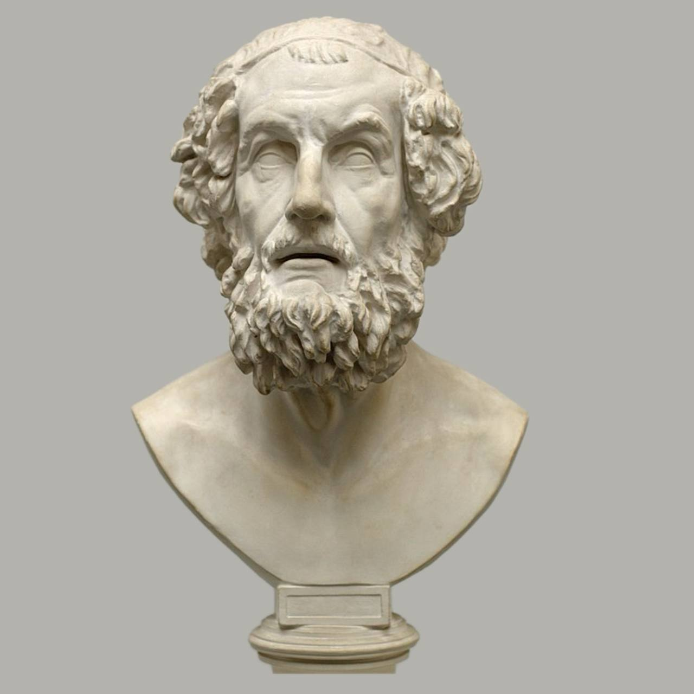
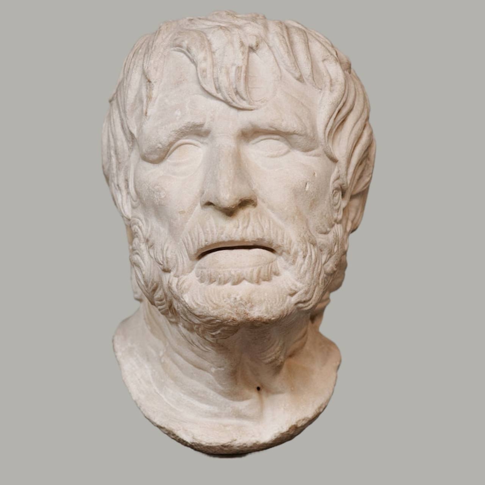
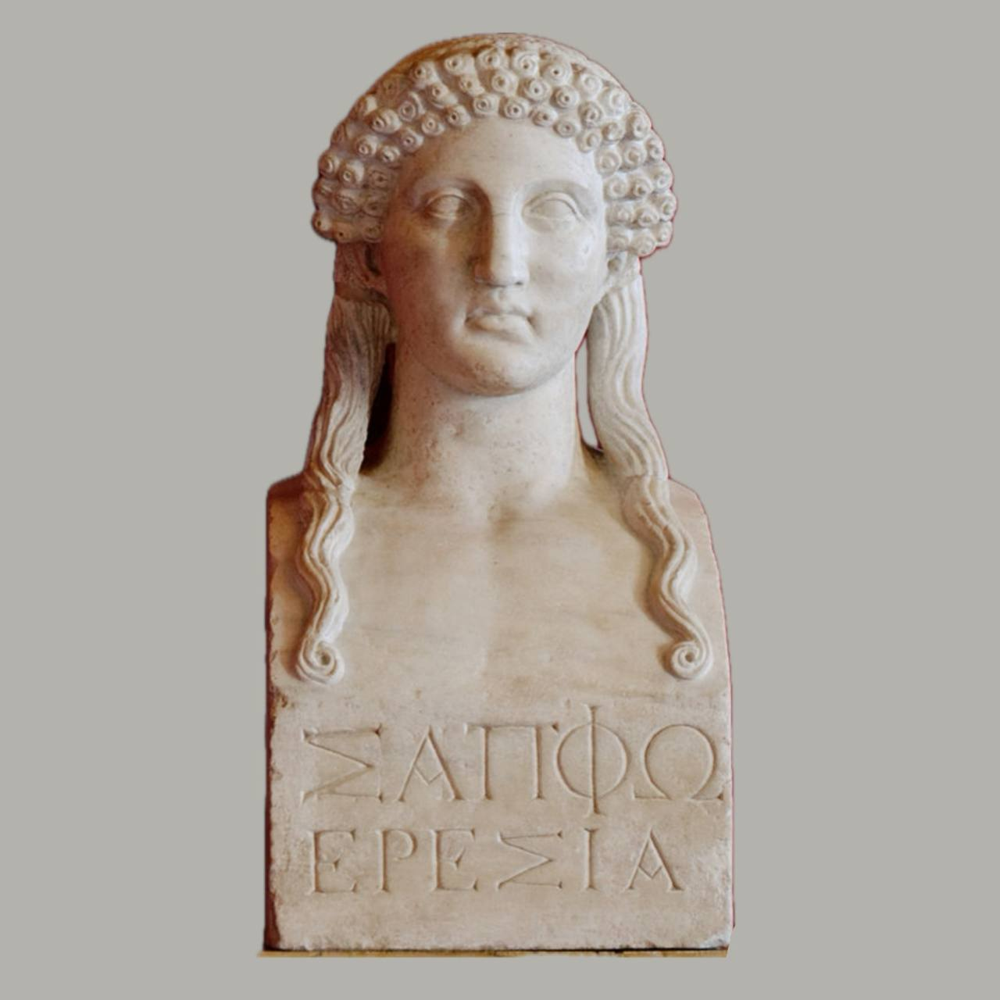
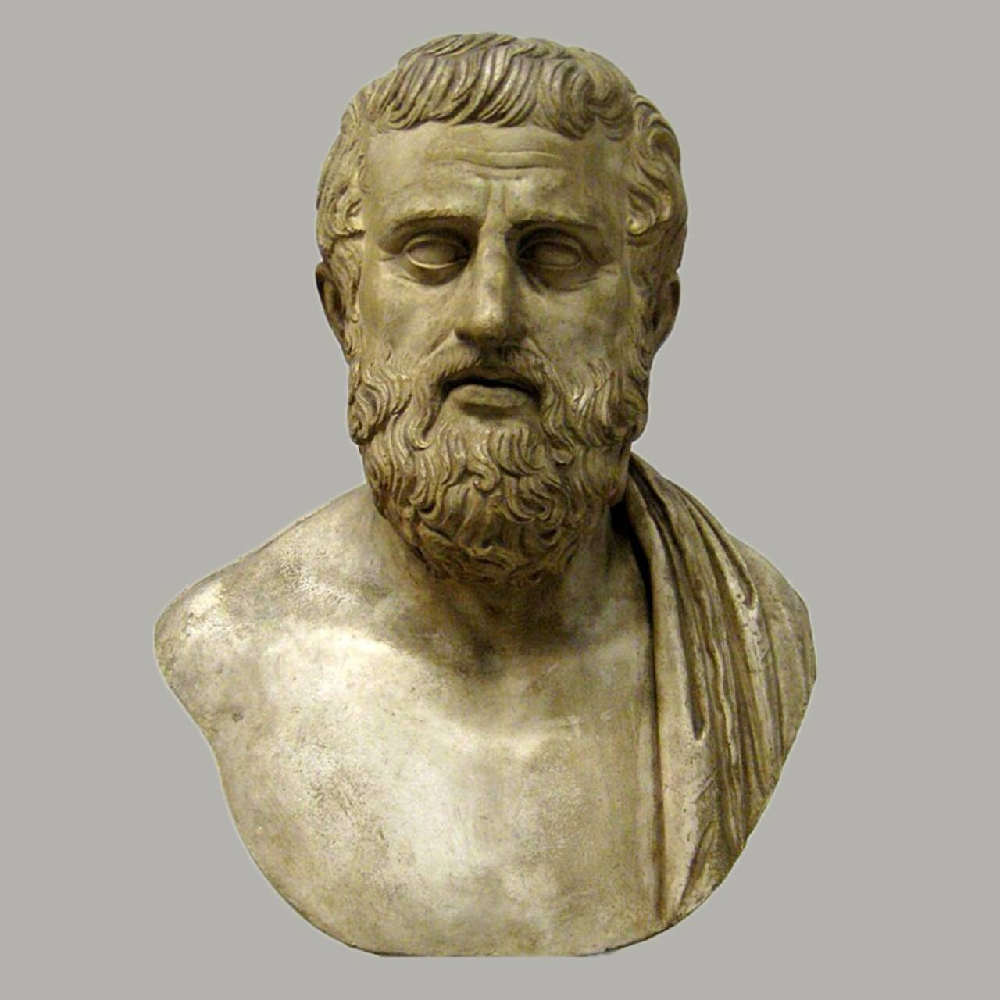
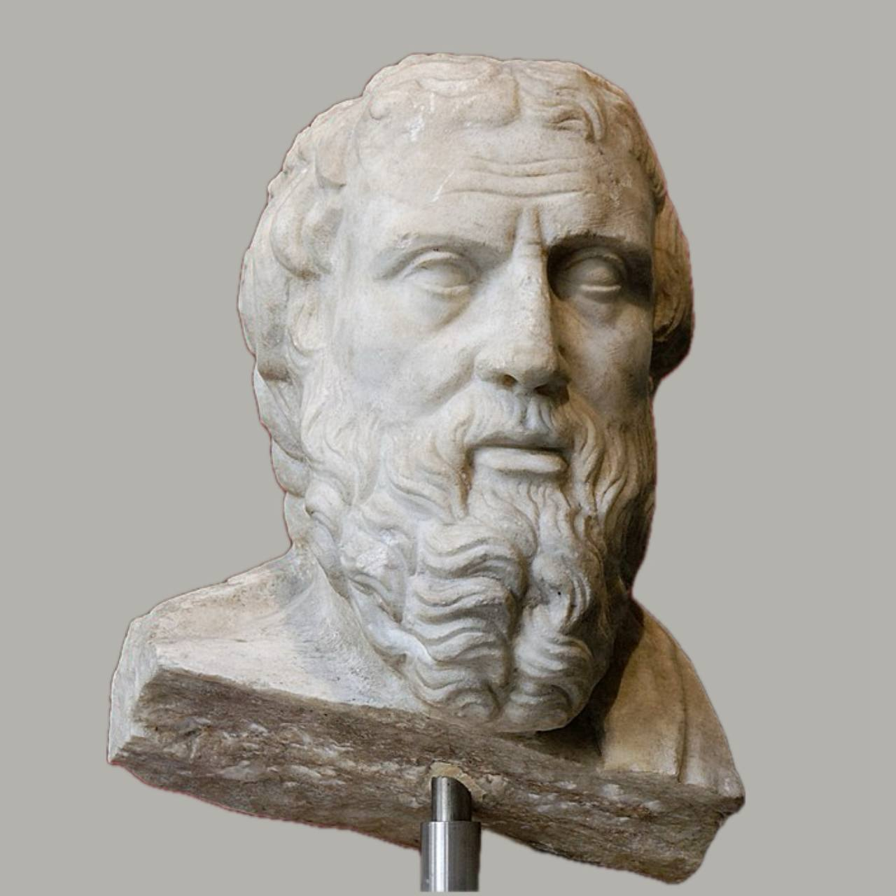

| Имя поэта | Годы жизни | Место рождения и смерти | Жанр | Ссылка на корпус текстов | Изображение |
|---|---|---|---|---|---|
| Гомер | около IX века до н. э — около VIII века до н. э. | Саламин — остров Иос | Героический эпос | Подробнее |  |
| Гесиод | VIII век до н. э. — VII век до н. э. | Кима, Измир, Турция — Аскра, Греция | Дидактический, генеалогический эпос | Подробнее |  |
| Сапфо | VII век до н. э. — около 570 до н. э. | остров Лесбос — Лефкас, Ионические острова, Греция | Монодическая мелика | Подробнее |  |
| Софокл | около 496 до н. э. — 406 г. до н. э. | Древние Афины | Древнегреческая трагедия | Подробнее |  |
| Геродот | около 484 до н. э. — около 425 до н. э. | Галикарнас, Кария — Фурии, Калабрия | История | Подробнее |  |